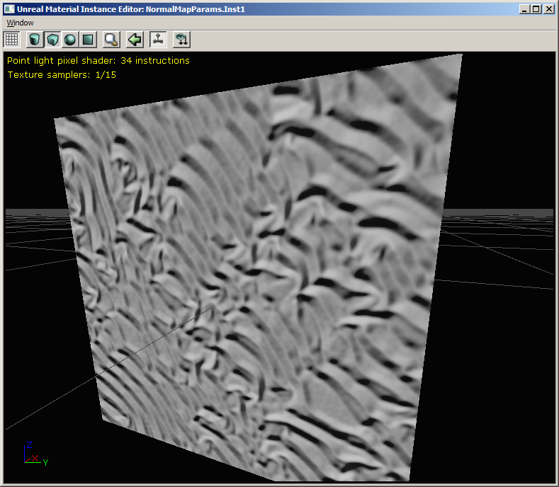

UDN
Search public documentation:
NormalMapFormatsCH
English Translation
日本語訳
한국어
Interested in the Unreal Engine?
Visit the Unreal Technology site.
Looking for jobs and company info?
Check out the Epic games site.
Questions about support via UDN?
Contact the UDN Staff
日本語訳
한국어
Interested in the Unreal Engine?
Visit the Unreal Technology site.
Looking for jobs and company info?
Check out the Epic games site.
Questions about support via UDN?
Contact the UDN Staff
法线贴图格式
概述
法线贴图格式
| 压缩设置 | 贴图格式 | 通道 | 每个像素的位数 | 分辨率为 1024x1024 时的所占空间大小 | 评论 |
| TC_Normalmap | DXT1 | 3(*) | 4 | 512 KB | * 在 DXT1 的 alpha 通道中存储 1-位的 alpha（蒙板）是可以的 |
| TC_NormalmapAlpha | DXT5 | 4 | 8 | 1024 KB |
| TC_NormalmapBC5 | BC5 (3Dc / DXN) | 2 | 8 | 1024 KB | DirectX 10 和 Xbox 360，或者在DirectX 9 下的 ATI 显卡支持这种格式 |
TC_Normalmap / DXT1
 TC_Normalmap (DXT1) 在所有的格式中占用的内存最少，但是 DXT1 块压缩不是非常适合存储法线贴图数据。结果一般都是非常斑驳的。
TC_Normalmap (DXT1) 在所有的格式中占用的内存最少，但是 DXT1 块压缩不是非常适合存储法线贴图数据。结果一般都是非常斑驳的。
TC_NormalmapAlpha / DXT5
TC_NormalmapAlpha (DXT5) 和 DXT1 的视觉效果一样，但是也拥有每个像素占 4-位的压缩的 alpha 通道数据作为蒙板。在 DXT5 中放置一个您需要的蒙板而不是另一个简单的贴图可以获得更好的性能。但是如果您把蒙板放置到一个漫反射贴图中，它将允许您使用另一个法线贴图格式。TC_NormalmapUncompressed / V8U8

未压缩的格式存储法线贴图的三个通道中的两个，每个通道占 8 位（所以每个像素占 16 位）。这个法线贴图的质量最高，但因为仅存储了 2 个通道，Z 需要在像素着色器中进行计算。（材质编辑器可以自动执行这个功能，请注意在上面的屏幕截图中所增加的指令数）。 因为内存使用量是 DTX1 的四倍，所以把 X 和 Y 的分辨率降低为原来的一半（也就是 1mip 等级）将会使内存使用量和 DXT1 一致。 我们认为未压缩的仅具有一半分辨率的法线贴图看上去要比 DXT1 压缩法线贴图更好，所以 当选择 TC_NormalmapUncompressed 格式时，贴图编辑器自动降低了它的分辨率 。当改变回另一种格式时，则恢复贴图的原始分辨率。 （这段代码在 UTexture2D::Compress() 函数中，您可以移除或禁用这个功能）TC_NormalmapBC5 / BC5 (3Dc / DXN)
 BC5 格式，也称为 3Dc 或 DXN，不是所有的平台都支持这种格式 - 仅DirectX 10、Xbox 360 和 DirectX 9 下的 ATI 显卡支持这种格式。对于法线贴图的 X 和 Y 向量，它使用每个像素占 4 位的压缩机制，这个 DXT5 上的 alpha 通道的压缩机制类似，意味着各个通道是彼此独立的。当和 DXT5 占有同样的内存时，这种方式将会产生更少的斑驳现象。和未压缩的格式一样，Z 在像素着色器中进行推导出来。
BC5 格式，也称为 3Dc 或 DXN，不是所有的平台都支持这种格式 - 仅DirectX 10、Xbox 360 和 DirectX 9 下的 ATI 显卡支持这种格式。对于法线贴图的 X 和 Y 向量，它使用每个像素占 4 位的压缩机制，这个 DXT5 上的 alpha 通道的压缩机制类似，意味着各个通道是彼此独立的。当和 DXT5 占有同样的内存时，这种方式将会产生更少的斑驳现象。和未压缩的格式一样，Z 在像素着色器中进行推导出来。
材质编辑器使用注意事项
TextureSample(贴图样本)节点
在TextureSample(贴图样本)节点中使用任何格式的法线贴图都可以正确地工作。然而，法线贴图的格式仅在重新编译材质着色器时进行检查。所以如果您在没有重新编译着色器的情况下改变法线贴图的CompressionSettings(压缩设置)，产生的贴图着色器代码可能会不匹配。这和 UnpackMin/Max 的操作类似。TextureSampleParameter2D 节点
在TextureSampleParameter2D 节点的默认值中使用任何格式的法线都可以正确地工作。然而，任何覆盖参数默认值的材质实例 必须和默认的 Texture(贴图)属性有相同的 CompressionSettings(压缩设置) 。和 TextureSample 一样，在没有重新编译应用的着色器情况下，改变贴图默认的 CompressionSettings(压缩设置)，会产生同样的警告。TextureSampleParameterNormal 节点
 在TextureSampleParameterNormal 节点的默认值中使用任何格式的法线贴图都可以正确地工作，并且在材质实例编辑器中创建的任何常量实例都可以覆盖具有任何格式贴图的法线参数。如果格式需要不同的像素着色器，那么将会重新编译实例的新版本。
但和 TextureSample 一样，在没有重新编译所应用的着色器的情况下，改变贴图的 CompressionSettings（压缩设置），将会产生同样的警告。
在TextureSampleParameterNormal 节点的默认值中使用任何格式的法线贴图都可以正确地工作，并且在材质实例编辑器中创建的任何常量实例都可以覆盖具有任何格式贴图的法线参数。如果格式需要不同的像素着色器，那么将会重新编译实例的新版本。
但和 TextureSample 一样，在没有重新编译所应用的着色器的情况下，改变贴图的 CompressionSettings（压缩设置），将会产生同样的警告。
建议
- 使用降低分辨率的 TC_NormalmapUncompressed 格式代替 TC_Normalmap 格式，如果它使您的内容看上去更好。它们的内存使用量一样。
- 如果您正在制作 Xbox 360 游戏，您觉得 TC_NormalmapBC5 格式所和降低分辨率的 TC_NormalmapUncompressed 相比所带来质量的差异值得您增加 2 倍的内存量，那么请使用 TC_NormalmapBC5。
- 无论您是否需要使用法线贴图作为参数，我们推荐您使用 TextureSampleParameterNormal 材质节点。
- 您应该使您所使用的法线贴图格式和特定材质实例的父类保持一致，从而可以降低产生的着色器的数量。